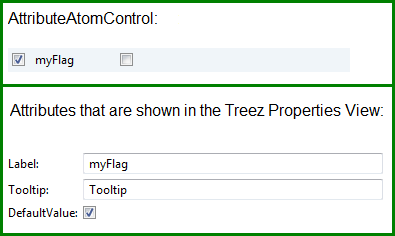

BooleanVariableField
Purpose
The purpose of the is to edit a boolean variable.
It can be used by a .
Class name
org.treez.core.atom.variablefield.BooleanVariableField
Construction
A new is created by:
User interaction
Each VariableField provides two controls:
- a so called AttributeAtomControl that is used to edit a variable
(e.g. in the control of a ).
- a control that allows to edit the properties of the VariableField itself
(e.g. the label and the tool tip that are used in the AttributeAtomControl.).

The first check box of the AttributeAtomControl enables/disables the VariableField. The second check box edits the boolean variable.
The context menu in the also allows to enable/disable the VariableField and to delete it.
Attributes
Attributes that are shown in the :
- Label: the label that is used in the AttributeAtomControl.
- Tooltip: the tool tip that is used in the AttributeAtomControl.
- DefaultValue: the default value of the variable. This value is used if the VariableField is reset.
Code example that sets some attributes:
BooleanVariableField myFlag = genericModel.createBooleanVariableField("myFlag");
myFlag.setLabel("My flag");
myFlag.setTooltip("Tooltip for my flag");
myFlag.setDefaultValue(true);
myFlag.setValue(false);
myFlag.setEnabled(false);